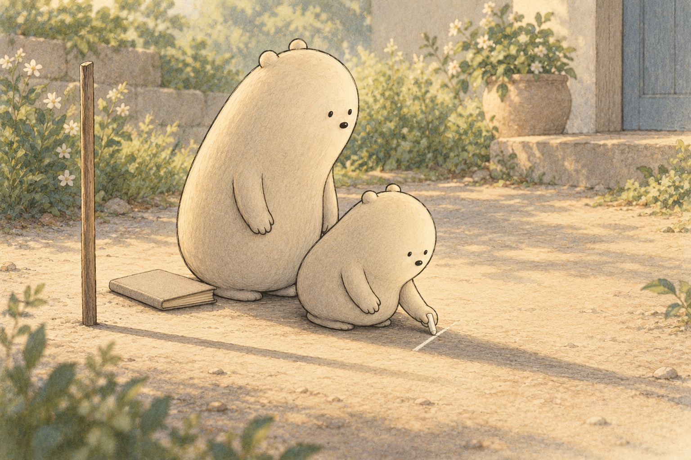
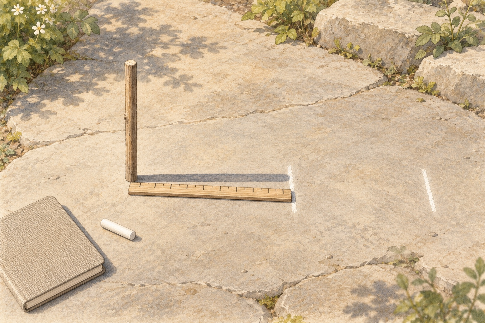
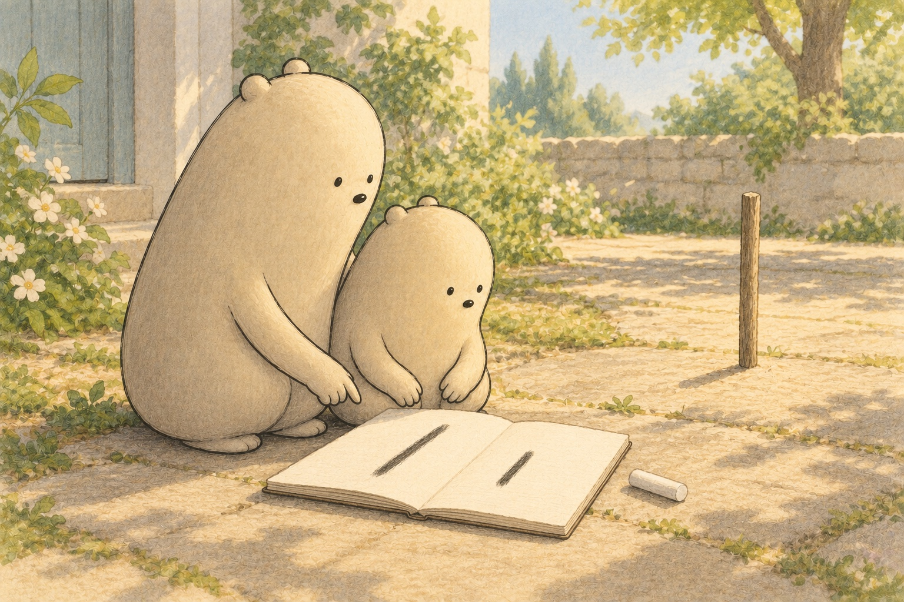

WONDER DAILY GRADE 3 · WRITING
Give a measurement its words
Shadows at Noon · Curiosity day
Name __________________________ Date _______________
Write one clear command sentence about measuring a shadow. Say it first if you like.



Draw the stick, its shadow, and a chalk mark. Add one label.
stand · stick · mark · tip · shadow · measure · first · then
First, … tell how to stand the stick or mark the tip
Then, … tell how to measure from the stick to the mark
At the end, … tell how to save or compare the length
Does your sentence tell what to do, with a command such as Stand, Mark, Measure, or Compare?